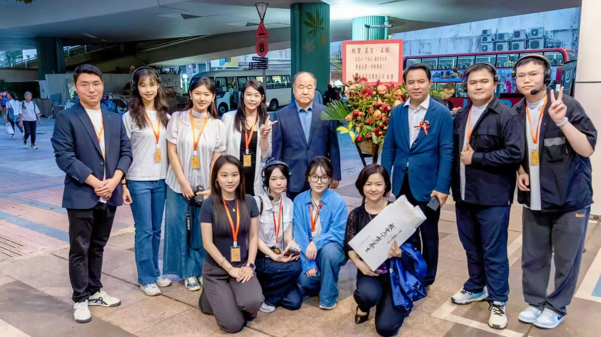
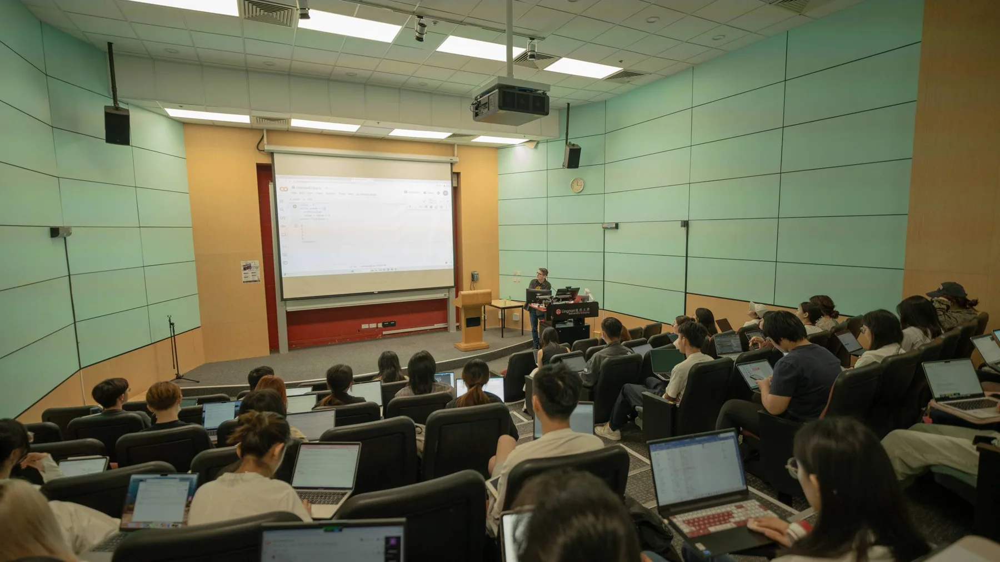
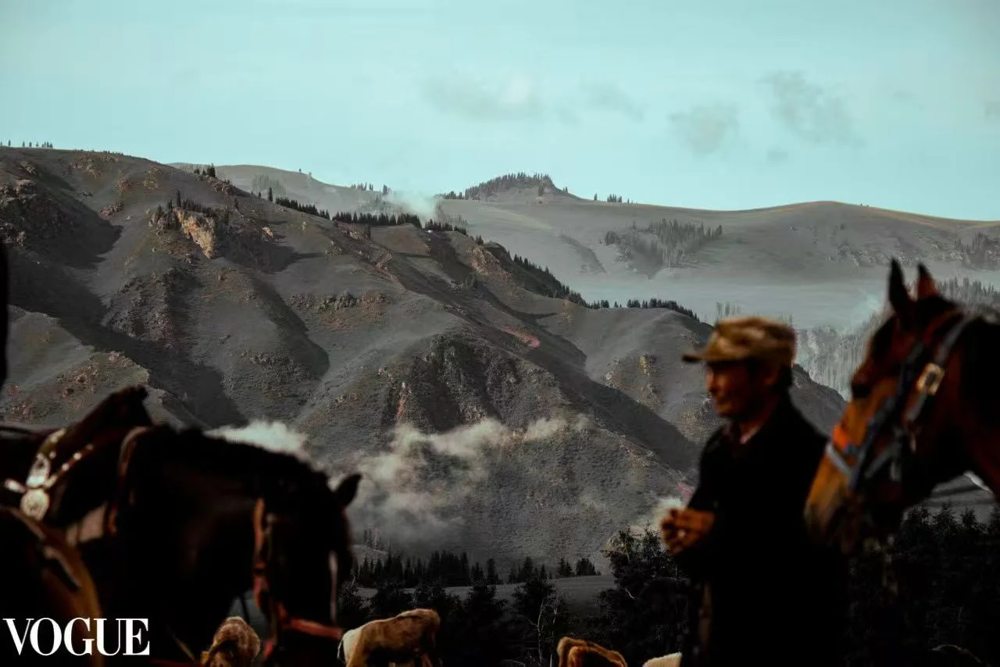

Digital · Museum
香港大學中文學院
香港大學中文學院
博物館文化周
嶺先文化受委託負責該項目的整體視覺呈現與數字化落地。我們為「博物館文化周」設計了極具美感的主視覺（KV），並獨立承接了活動官方網站的 UI/UX 設計與全棧搭建，確保了學術文化項目的現代化、數字化傳播。
瀏覽活動網站 →立足香港，連結更廣闊的文化現場。
一間由嶺南大學創業計劃孵化的校友企業，立足香港，輻射大灣區，致力於將深厚的人文素養與前沿的數字科技相結合。
我們不只是內容的生產者，更是文化的翻譯者。
香港嶺先文化傳播有限公司是一間由嶺南大學創業計劃孵化的校友企業。我們立足香港，輻射大灣區，致力於將深厚的人文素養與前沿的數字科技相結合。
作為一家具備學術背景與商業敏銳度的綜合性文化傳播機構，我們擁有一支由香港及內地頂尖高校校友組成的創意團隊。
多年來，我們與香港大學、北京大學、復旦大學、嶺南大學、哈佛大學等頂尖學府及多個國際組織保持緊密合作，成功落地多項高規格的文化與學術項目。


從影像製作到品牌賦能，一站式解決數字時代的文化傳播需求。
專注教育敘事與文化紀錄，擅長將複雜內容轉化為生動影像，提升傳播感染力。
實時記錄，瞬間共享。依托雲平台與 AI 工具，實現拍攝後即時上傳、修圖與交付。
融合文化美學與互動體驗，根據用戶需求提供客製化服務，打造專屬數位化平台。
視覺傳達與品牌形象的精準表達，涵蓋活動海報、多媒體宣傳內容與文化符號設計。
從概念到落地的全流程創意管理，包含場地佈置、全程攝影、現場協調及通訊架構。
多平台內容策略與受眾互動。打造個人 IP 品牌，覆蓋 B 站、YouTube、小紅書等多渠道。
整合多元創意解決方案，為傳統文化、學術成果及商業客戶提供一站式數字營銷賦能。
與頂尖學府及國際組織合作的代表性項目，涵蓋學術傳播、論壇展覽與影視創作。
嶺先文化受委託負責該項目的整體視覺呈現與數字化落地。我們為「博物館文化周」設計了極具美感的主視覺（KV），並獨立承接了活動官方網站的 UI/UX 設計與全棧搭建，確保了學術文化項目的現代化、數字化傳播。
瀏覽活動網站 →作為該旗艦學術傳播項目的核心製作方，我們負責了全系列視頻的拍攝、剪輯與視覺包裝。同時主導了 @嶺南大學蔡宗齊老師 IP 頻道的全程運營，通過多平台內容策略，極大提升了學術內容的大眾觸達率。
YouTube 頻道 → Bilibili 頻道 →嶺先文化團隊為此國際商業科技會議提供了端到端技術解決方案。我們負責大會宣傳海報設計，並全程統籌網路直播與照片直播，即時傳輸演講瞬間，實現線上瀏覽量 1000+，確保了國際級會議的高效傳播。
負責諾貝爾文學獎獲得者莫言在港展覽的整體統籌。團隊主導了大會主視覺（KV）設計與宣傳策略，並全面承接現場攝錄影方案（含無人機活動）及整體行政管理。活動現場吸引 300+ 觀眾，引發多家媒體報導。
為「The Avant-Garde × Hong Kong and the New South」聯合學術研討會搭建全面的現場錄製與直播解決方案。協助高校與大中華區及歐美國家學術機構順利舉辦國際學術會議，主導核心視覺設計並統籌現場管理。
嶺先文化團隊自行策劃並組織設計的影視實習工作坊。課程涵蓋數字人文、攝影燈光、新媒體創作及後期剪輯等，邀請多位業內專家及頂尖高校學者親臨授課。活動不僅提升了學生在文化傳播領域的職業競爭力，更為優秀學員提供獎學金及工作推薦。
為學術出版物及機構設計並製作高品質的視覺宣傳內容，涵蓋 3D 建模渲染、動態視覺及實拍攝影，全方位塑造專業且極具電影感的品牌形象。
為《中國彩管史-佛山館》策劃並製作系列展覽影片，還原行業歷史與重要里程碑，用鏡頭記錄產業發展軌跡。專案包含：
嶺先文化團隊原創獨立製作之敘事短片，展現了我們在導演、編劇、攝影、剪輯及聲音設計上的全方位影視藝術創作能力，用鏡頭講述深度故事。
頂流演員林柏熙推掉了一部高片酬的商業大片，轉而接下一部在泉州拍攝的低成本獨立電影。表面上，他聲稱只是想吃一口地道的麵線糊，但實際是對他故土的深切依戀。
抵達泉州後，林柏熙卻發現劇組完全依賴虛擬製片技術來數位還原老城巷弄。投資方告訴他，真實的老街在明早就會面臨全面拆除。為了在真實消逝前抓住最後的觸感，林柏熙逃離了虛擬影棚，奔入大雨傾盆、即將拆遷的街區。
在身體肌肉記憶的本能引導下，他穿梭於錯綜複雜的巷弄，最終來到一個由老婦人經營的深夜小攤。透過一碗熱騰騰的麵線糊，以及老婦人認出他手臂上童年燙傷的疤痕，林柏熙終於與阿嫲重逢。
國際頂尖時尚雜誌收錄之攝影作品。
精彩文化瞬間記錄。
